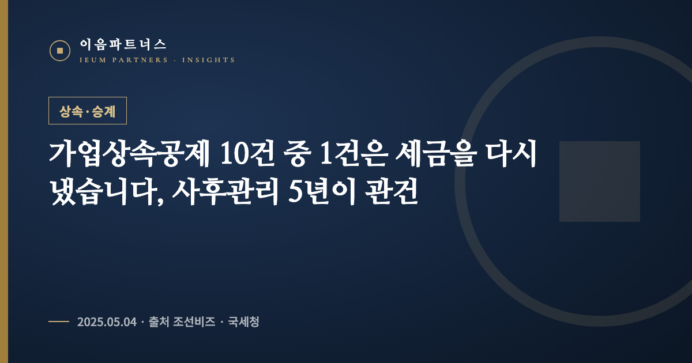

가업상속공제 10건 중 1건은 세금을 다시 냈습니다, 사후관리 5년이 관건

가업상속공제는 상속세를 크게 줄여 주지만, 공제를 받은 뒤가 더 중요합니다. 최근 5년간 가업상속공제를 받은 649건 가운데 59건이 사후관리 위반으로 상속세 541억 5천만 원을 추징당했습니다. 이 글에서는 어떤 경우에 공제받은 세금을 다시 내게 되는지, 그리고 공제 뒤 5년 동안 대표님이 지켜야 할 요건을 정리합니다.
사후관리 위반은 회사가 어려워 직원을 줄이거나 자산을 처분하는 과정에서 생각보다 쉽게 일어납니다. 승계를 계획하는 단계부터 이후 5년의 경영 계획을 함께 세워 두는 것이 좋습니다. 우리 회사 사후관리 요건이 궁금하시면 카카오톡 채널 이음파트너스에서 함께 점검해 볼 수 있습니다.
얼마나 다시 냈나
국회의원실이 공개한 자료에 따르면 최근 5년간 국세청이 가업상속공제 사후관리 위반으로 추징한 상속세는 59건, 541억 5천만 원입니다. 기사는 공제 “10건 중 1건은 상속 사후 관리 위반으로 상속세 추징을 당하고 있는 셈”이라고 전했습니다(조선비즈).
| 구분 | 내용 |
|---|---|
| 공제 건수 | 최근 5년 649건 |
| 사후관리 위반 추징 | 59건, 541억 5천만 원 |
| 그중 고용 의무 위반 | 246억 2천만 원 (위반 유형 가운데 가장 큼) |
| 공제 규모 | 가업상속재산의 100%, 최대 600억 원 |
기사에 소개된 사례를 보면, 전기 설비 제조업체를 물려받아 약 300억 원을 공제받은 장남이 경기 침체로 직원을 30여 명에서 20명으로 줄이려 했습니다. 그러나 공제받은 세금 250억 원을 다시 낼 수 있다는 세무사 조언에 결국 대출을 받아 고용을 유지했습니다(조선비즈).
공제 뒤 5년, 무엇을 지켜야 하나
① 자산·업종·대표 자리
상속개시일부터 5년 동안 가업용 자산(토지·건물·기계장치 등)의 40% 이상을 처분하면 안 되며, 보유 부동산을 임대하는 것도 처분으로 봅니다. 상속인은 5년 동안 대표이사로 일해야 하고, 업종을 바꾸거나 1년 이상 휴업하거나 폐업해서도 안 됩니다(조선비즈).
② 지분
상속받은 주식을 팔거나, 유상증자 때 신주를 받지 않아(실권) 지분율이 줄어드는 경우도 위반이 됩니다(국세청 가업승계 지원제도 안내).
③ 고용
5년간 정규직 근로자 수의 평균과 총급여액의 평균이 상속 직전 2개 사업연도 평균의 90%에 모두 못 미치면 위반이 됩니다(국세청). 두 기준을 함께 보기 때문에, 인원을 줄여야 하는 상황이라면 총급여액은 유지할 수 있는지도 따져 볼 수 있습니다.
대표님이 지금 확인할 것
- 상속 직전 2개 사업연도의 정규직 인원과 총급여액을 기준값으로 정리해 두고, 매년 그 대비 몇 %인지 확인하세요.
- 사옥·공장 등 가업용 자산을 팔거나 임대할 계획이 있다면 처분 비율부터 계산하세요.
- 증자나 지분 이동 계획이 있다면 상속인 지분이 줄지 않는지 미리 세무사와 검토하시길 권합니다.
참고한 자료
- [똑똑한 증여] 가업 상속받고 경영난에 직원 줄였더니 세금 폭탄 — 조선비즈 (2025.05.04)
- 2024년 가업승계 지원제도 안내책자 — 국세청 (2024.04)
가업상속공제 뒤 사후관리를 어떻게 챙길지 고민이시라면 카카오톡 채널 이음파트너스로 편하게 문의해 주세요.
※ 이 글은 일반적인 정보 제공을 위한 것으로, 개별 사안은 세무사·노무사 등 전문가와 함께 확인하시기 바랍니다.